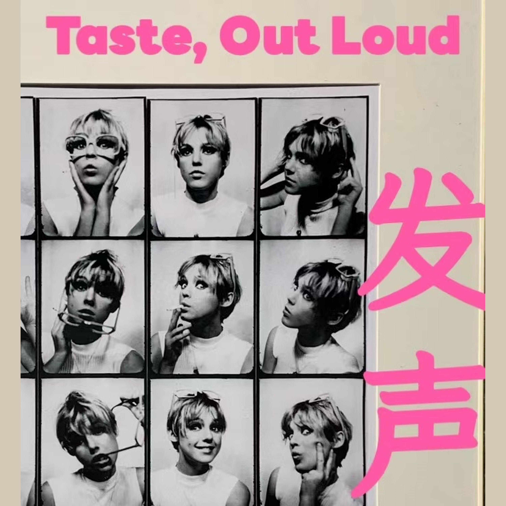

发声 Taste, Out loud
用 AI 时代最好的双语内容，练你自己的表达质感。 《发声 Taste, Out loud》和希望低阻力输入、高质感表达的朋友，一起打磨输入输出系统。 我们筛选全球 AI 商业访谈和产业课，中英分轨精读一手材料：不是把长音频再讲一遍，是把好内容练成你自己说得出口的句子；听完你该能带走两样东西：一句站得住的商业判断，以及可以反复用的行业表达。把表达练成肌肉记忆，比多听一期资讯更重要。节目前身是瑜伽课后，还是同一档。 如果你希望继续收到这类筛选，把表达练成肌肉记忆，可以订阅，节目微信听友群【好事发声听友群】。
订阅 RSS：feed.xml（可粘贴到小宇宙搜索栏）
透过AI播客学英文课。十八问重读生命科学专场；卖工具的 Josh 与卖模型的 Eric 对打价值落在哪一层。
透过AI播客学英文课。写代码不特别，部署到客户面前才特别；席位走向 token。
透过AI播客学英文课插队新闻精讲。三集连读追完 Meta 收购 Manus：coup、unwind、divest；比的是谁真赚钱。
透过AI播客学英文课第十六讲。通用模型给能力地板，企业上下文、Evals 与持续反馈决定能力天花板。
透过AI播客学英文课第十五讲。精读讲解稿直出。算力等于整条供应链；利润押在最底层；ASML 是咽喉点。
透过AI播客学英文课第十四讲。精读讲解稿直出。AGI 已到但企业缺组织上下文；软件没死，价值上移到应用层。
透过AI播客学英文课第十三讲。精读讲解稿直出。资本开支花在哪、每兆瓦怎么拆、四年还是两年回本。
透过AI播客学英文课第十二讲。AI 为什么吃算力、成本为何暴跌而需求爆炸、真正的瓶颈是电力与内存。
透过AI播客学英文课第十五期。怎么把真心热爱的东西自然变成事业——做唯一、让热情当护城河、卖的是生活方式。
透过AI播客学英文课第十期。从半导体到应用的倒三角、为什么 AI 应用必须烧掉 GPU，以及消费 AI 的变现逻辑。
透过AI播客学英文课第九期。AI 产品第三时代——能长期共事的常驻 AI 同事。
透过AI播客学英文课第八期。B2B 产品如何被热爱：速度与质量不是权衡。
透过AI播客学英文课第七期。AI 能力增长是不是只靠堆规模、智能体落地为什么卡在人才、创业为什么更像打网球。
透过AI播客学英文课第六期。当全公司百分之九十的人都在用 Codex，产品工作的价值转向品味与判断力。
透过AI播客学英文课第五期。Claude 八个月如何从接到工具、走进组织，到动手碰电脑。
透过AI播客学英文课第四期。代码编辑器到底为了什么、编程带宽如何从打字转向意图。
透过AI播客学英文课第三期。反对默认堆产品经理；协调中间层在贬值，一线动手才是护城河。
透过AI播客学英文课第二期。为什么对强大 AI 看涨，以及如何把安全写成和能力同一张工程清单。
透过AI播客学英文课第一期。产品团队如何把交付从六个月压到一天，以及代码变便宜之后，真正稀缺的是决定写什么。
职业选择的底层不是能力或薪资，是内心是否真正确信。